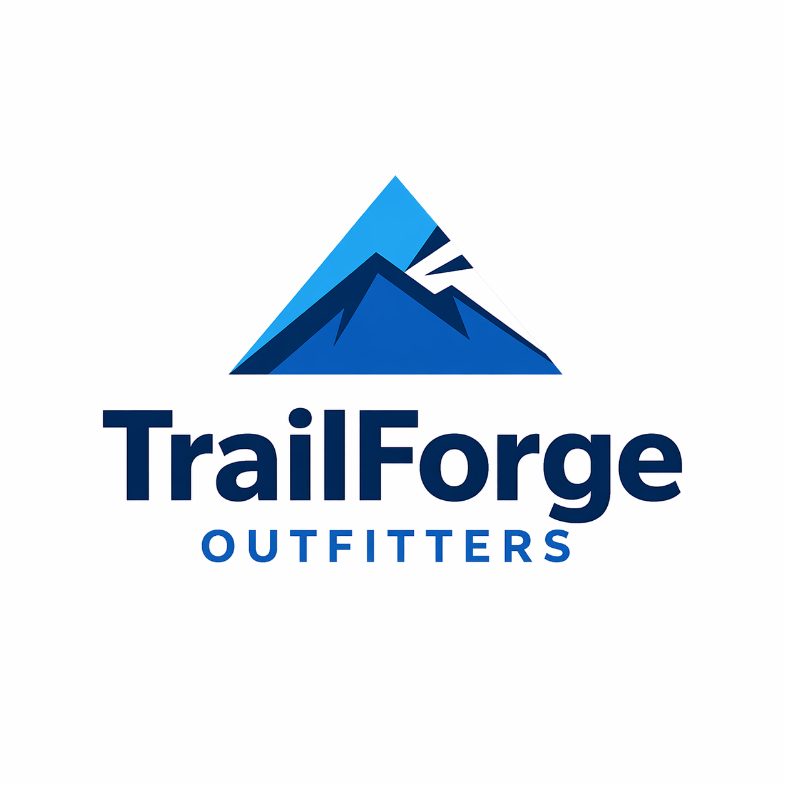
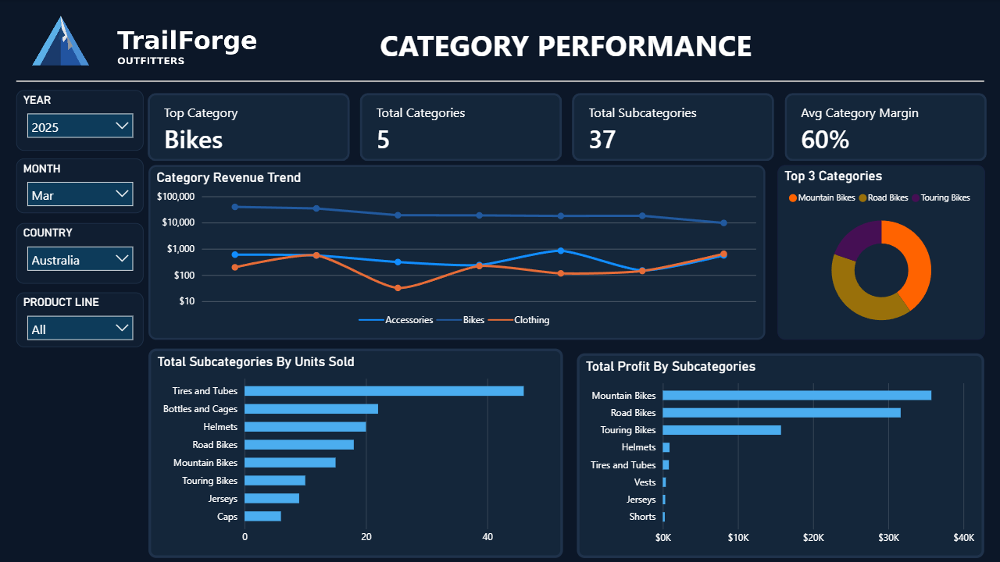

TrailForge Outfitters
Retail Intelligence System
A full retail analytics pipeline — from raw SQL ingestion to Power BI dashboards — built using a Medallion-style warehouse design across 6 source datasets.

Problem & Data Sources
Retail teams need answers, not raw tables. This project transforms scattered transactional data from six CRM and ERP source files into a clean reporting model that supports real decisions around sales, categories, products, and customers.
CRM: cust_info, prd_info, sales_details
ERP: CUST_AZ12, LOC_A101, PX_CAT_G1V2
Are sales growing or declining over time?
Which categories drive the most revenue and profit?
Which products should be pushed or reviewed?
Which customers create the most value?
Medallion Pipeline
Star Schema
A central fact table connected to customer and product dimensions — making filtering, aggregation, and time-based reporting straightforward inside Power BI.
Dashboard Pages
Executive Overview

Top-level business health: are sales growing, are margins healthy, and where are trends heading?
Sales Yearly View

Year-over-year revenue growth, category breakdown, and margin trends across the full data range.
Category Performance

Which categories carry revenue vs. which are stronger from a profitability angle?
Product Performance

Which products drive volume, which drive profit, and which need to be reviewed or replaced?
Customer Value

The most valuable customers by spend, frequency, and order behavior — for retention, not just transactions.
Not Just Visuals
Sales concentrate in a few categories while some lower-volume ones carry stronger margins.
Revenue alone doesn't tell the full story — product mix and category margin shift overall performance significantly.
Push high-margin categories, review weak products, and focus on customer segments with stronger repeat value.
From Raw Data to Real Decisions
Six raw files. One structured warehouse. Four Power BI dashboards. The system covers the full stack — ingestion, cleaning, modeling, and reporting — and delivers clear answers on sales, categories, products, and customers.
Medallion warehouse: Bronze → Silver → Gold
SQL cleaning: deduplication, normalization, ROW_NUMBER()
Star schema: fact_sales + 4 dimension tables
Power BI: 4 dashboard pages with DAX KPIs